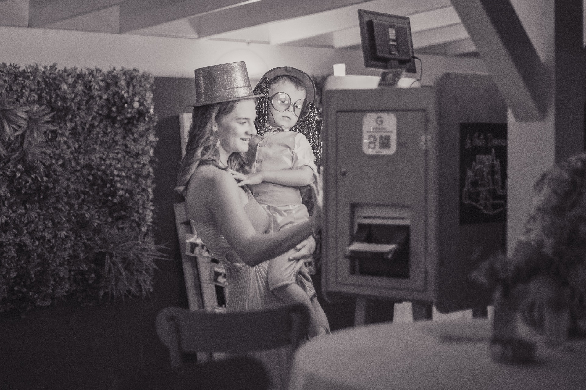
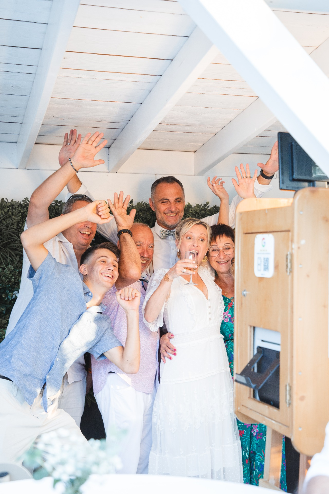

Photobooth Mariage
Des souvenirs instantanés pour le plus beau jour de votre vie
La borne photo La Photo Drômoise est l'animation idéale pour créer des souvenirs uniques et divertir vos invités tout au long de la soirée.
Très populaire lors des mariages, le photobooth permet à chacun de prendre des photos amusantes, seul, en couple ou en groupe, et de repartir immédiatement avec un tirage souvenir.


Une animation incontournable pour votre mariage
Le photobooth est aujourd'hui l'une des animations les plus appréciées lors des mariages.
Entre deux plats, après l'ouverture de bal ou pendant la soirée, les invités adorent se retrouver devant la borne photo pour capturer des moments spontanés.
Résultat :
- des photos naturelles
- des moments de rire
- des souvenirs uniques pour vos invités.
Bon, c'est bien beau tout ça… mais comment ça marche vraiment ?
1️⃣ On arrive avec la borne
On installe la borne photo sur votre lieu de réception. Promis, c'est rapide, discret… et on ne touche pas au buffet.
2️⃣ Vos invités se lâchent
Chapeaux, lunettes, moustaches… Certains deviennent mannequins, d'autres humoristes. Et parfois, on découvre des talents qu'on ne soupçonnait pas.
3️⃣ Les photos sortent instantanément
Quelques secondes après la pose, les tirages arrivent. Résultat : des souvenirs… et quelques photos dossiers.
4️⃣ Après la soirée
Vous récupérez toutes les photos dans une galerie en ligne. Oui, même celles de tonton à 2h du matin.
Une borne élégante pour les mariages
La borne photo de La Photo Drômoise possède un design en bois élégant qui s'intègre parfaitement dans les lieux de réception :
- domaines de mariage
- châteaux
- salles de réception
- restaurants.
Elle devient à la fois une animation et un élément de décoration.
Des souvenirs pour vos invités
Le photobooth permet à vos invités de repartir avec :
- un tirage photo souvenir
- un moment amusant partagé entre amis ou en famille.
Beaucoup de mariés utilisent également les photos pour compléter leur livre d'or de mariage.
Photobooth mariage à Valence et dans la région
Basée à Bourg-lès-Valence, La Photo Drômoise accompagne de nombreux mariages dans la région.
Nous intervenons notamment autour de :
- Valence
- Romans-sur-Isère
- Montélimar
- Crest
- Tain-l'Hermitage
- et bien sûr dans les départements voisins selon les événements.
Pourquoi choisir La Photo Drômoise pour votre mariage ?
- borne fabriquée à Bourg-lès-Valence
- photos de qualité studio
- impressions instantanées
- photos numériques illimitées
- installation simple.
Depuis plusieurs années, La Photo Drômoise a animé de nombreux mariages dans la région.
Réserver votre photobooth mariage
Vous souhaitez louer une borne photo pour votre mariage ?
Contactez La Photo Drômoise pour vérifier la disponibilité à votre date et recevoir un devis.
Ils ont choisi La Photo Drômoise pour leurs événements
La Photo Drômoise : Photobooth Valence, Location Animation, Borne Selfie, Machine Photobooth, Photobox, Photomaton, Selfie Box, Boite Selfie, Box à Photo…
pour PARTICULIER : Mariage, Anniversaire, Baptême, Fête... pour ENTREPRISE : Inauguration, Portes Ouvertes, Lancement produits... pour ASSOCIATIONS
Disponible dans la Régions : RHONE ALPES.
Zones où nous intervenons : Drôme & Ardèche.
Zones d'intervention : Valence • Romans-sur-Isère • Tain-l'Hermitage • Tournon-sur-Rhône • Chabeuil • Bourg-lès-Valence • Portes-lès-Valence • Guilherand-Granges • Saint-Péray • Montélimar • Livron-sur-Drôme • Loriol-sur-Drôme • Bourg-de-Péage • Crest • Alixan • Rovaltain
Départements : Drôme (26) • Ardèche (07)